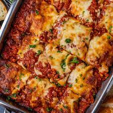

Lasagna Recipe

Description
Lasagna is a classic Italian pasta dish consisting of layers of pasta,
flavorful meat sauce, creamy cheeses, onions, and garlic, all baked to
perfection. It's a comforting and satisfying meal for any occasion.
Ingredients
- Lasagna noodles
- Ground beef
- Tomato sauce
- Ricotta cheese
- Mozzarella cheese
- Parmesan cheese
- Onions, finely chopped
- Garlic, minced
- Italian seasoning
- Salt and pepper, to taste
Steps
- Boil lasagna noodles until al dente. Drain and set aside.
-
In a pan, cook ground beef, onions, and garlic until browned. Add tomato
sauce, Italian seasoning, salt, and pepper. Simmer the sauce.
- In a separate bowl, mix ricotta cheese with salt and pepper.
- Preheat the oven to 375°F (190°C).
-
Layer lasagna noodles, meat sauce, ricotta mixture, and mozzarella
cheese in a baking dish. Repeat the layers until the dish is filled.
- Top with Parmesan cheese.
- Bake in the oven for 25-30 minutes or until bubbly and golden.
- Remove from the oven and let it cool for a few minutes.
- Serve slices of lasagna and enjoy your delicious homemade meal!